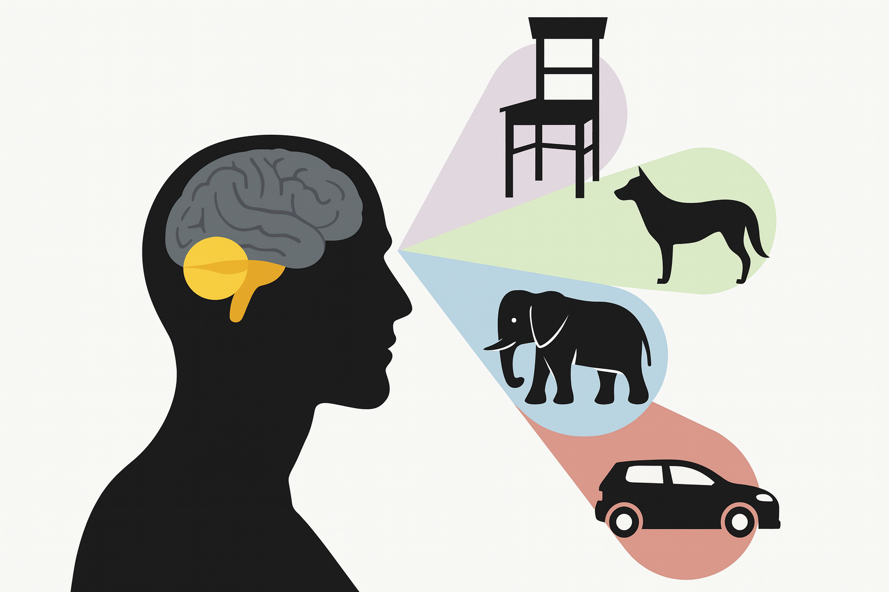

Computer Vision Thesis
The topics here outlined reflect areas I’m curious about and motivated to explore. Each contributes to a different piece of a bigger challenge, building AI systems that can perceive, model, and reason about the world through vision in a human-like way. At the same time, I’m very open to fresh perspectives. You may have better or more novel directions in mind, and I’d be excited to follow those paths if they open up fun projects! 😄
Ps. This document is evolving, new ideas for research projects might come up! Stay tuned! 🔥
To express your interest, fill this form: Form
For any question, contact me at: chiara.plizzari@unibocconi.it
Research Proposals
This section is reserved for new research directions and thesis ideas.
🏆 2026 BEHAVIOR Challenge
Requirements:
Collaborators:
Proposal 2.
Requirements:
Collaborators:
Old Proposals
The following thesis directions are previous proposals. They may still be available, but are grouped separately from newer ideas.
1. Towards Robust Video-Question Answering
Requirements: Python, PyTorch

The task of Video Question Answering (Video QA) involves analyzing a video in order to correctly answer a given natural-language question. Recent approaches primarily leverage large vision-language models (VLMs), which have shown strong capabilities in multimodal understanding [5].
However, these models face notable limitations. A primary challenge lies in their difficulty in processing long videos due to input token constraints, which restrict the number of frames or segments that can be effectively analyzed [3]. As a result, important portions of the video may be omitted or compressed, leading to incomplete understanding. Beyond this, many models struggle to capture fine-grained temporal dynamics and subtle causal relationships between events, both of which are critical for tasks that require reasoning over sequences rather than isolated frames [2]. Their capacity for long-range reasoning is also limited, making it difficult to integrate information spread across distant segments of a video [3,5].
The goal of this thesis is to address one of these limitations by developing methods that enhance the reasoning capabilities of Video QA systems, with the broader goal of building more robust models for real-world video understanding [1,4].
References:
- [1] Taluzzi, Agnese, et al. "From Pixels to Graphs: using Scene and Knowledge Graphs for HD-EPIC VQA Challenge." arXiv preprint arXiv:2506.08553 (2025).
- [2] Plizzari, Chiara, et al. "Omnia de egotempo: Benchmarking temporal understanding of multi-modal llms in egocentric videos." Proceedings of the Computer Vision and Pattern Recognition Conference. 2025.
- [3] Liu, Shuming, et al. "BOLT: Boost Large Vision-Language Model Without Training for Long-form Video Understanding." Proceedings of the Computer Vision and Pattern Recognition Conference. 2025.
- [4] Perrett, Toby, et al. "Hd-epic: A highly-detailed egocentric video dataset." Proceedings of the Computer Vision and Pattern Recognition Conference. 2025.
- [5] Zhang, Boqiang, et al. "Videollama 3: Frontier multimodal foundation models for image and video understanding." arXiv preprint arXiv:2501.13106 (2025).
2. Neurosymbolic Approaches for Video Understanding
Requirements: Python, PyTorch

An area of particular interest is the use of neuro-symbolic approaches for video understanding. Instead of reasoning directly over raw pixel data, the question is whether computer vision models, such as large vision-language models (VLMs), can operate effectively on higher-level, structured representations of videos. These representations might include scene graphs, captions, or other symbolic abstractions that capture semantic information from the video. For example, scene graphs are commonly used to model the relationships between entities and actions within a scene [2].
By shifting the reasoning process from the video to these structured representations, models may achieve deeper temporal and causal understanding, greater interpretability, and improved scalability for long and complex videos [2].
Building on prior research experience, where a previous M.Sc. thesis led to securing first place in the HD-EPIC challenge [1], this thesis investigates how neuro-symbolic approaches can be leveraged for more robust video understanding.
References:
- [1] Taluzzi, Agnese, et al. "From Pixels to Graphs: using Scene and Knowledge Graphs for HD-EPIC VQA Challenge." arXiv preprint arXiv:2506.08553 (2025).
- [2] Rodin, I., Furnari, A., Min, K., Tripathi, S., & Farinella, G. M. (2024). "Action scene graphs for long-form understanding of egocentric videos." In Proceedings of the IEEE/CVF Conference on Computer Vision and Pattern Recognition (pp. 18622-18632).
3. World Models for Video Understanding

Requirements: Python, PyTorch
Collaborators: Gabriele Goletto from Microsoft Research

Animals and humans exhibit learning abilities and understandings of the world that are far beyond the capabilities of current AI and machine learning (ML) systems. For instance, an adolescent can often learn to drive a car in about 20 hours of practice, and children acquire language with relatively little exposure. Moreover, most humans know how to act in many situations they have never explicitly encountered.
By contrast, current ML systems typically require vast amounts of training data to be reliable, so that even rare combinations of situations are encountered frequently during training [2].
One explanation for this gap lies in the ability of humans and many animals to build world models, i.e., internal representations of how the world works. World models are crucial for tasks such as action prediction, task planning, robotic manipulation, and human–AI interaction [2]. They provide structured abstractions that enable predictive reasoning and planning, rather than passively processing inputs. Such models allow an agent to anticipate future states, reason about causal dependencies, and support decision-making [1,3].
Beyond perception, world models form the foundation for higher-level cognitive abilities. They can simulate alternative futures, evaluate potential outcomes, and guide planning in dynamic environments [2,4]. Recent works in video understanding have begun to explore this direction, developing systems that leverage predictive modeling and structured abstractions for planning and reasoning [5,6].
Following this line of research, this thesis aims to investigate world models in the context of video understanding, with the goal of assessing their strengths, limitations, and implications for computer vision tasks.
References:
- [1] Assran, Mido, et al. "V-jepa 2: Self-supervised video models enable understanding, prediction and planning." arXiv preprint arXiv:2506.09985 (2025).
- [2] LeCun, Yann. "A path towards autonomous machine intelligence version 0.9.2, 2022-06-27." Open Review 62.1 (2022): 1-62.
- [3] Bardes, Adrien, et al. "Revisiting feature prediction for learning visual representations from video." arXiv preprint arXiv:2404.08471 (2024).
- [4] Yang, Jihan, et al. "Thinking in space: How multimodal large language models see, remember, and recall spaces." Proceedings of the Computer Vision and Pattern Recognition Conference. 2025.
- [5] Chen, Delong, et al. "Planning with Reasoning using the Vision Language World Model." arXiv preprint arXiv:2509.02722 (2025).
- [6] Chen, Delong, et al. "WorldPrediction: A Benchmark for High-level World Modeling and Long-horizon Procedural Planning." arXiv preprint arXiv:2506.04363 (2025).
4. 4D Scene Understanding for Egocentric Vision
Requirements: Python, PyTorch, basic fundamentals on 3D
Collaborators: Gabriele Goletto from Microsoft Research; Marco Cannici from Politecnico di Milano
This thesis investigates a method for 4D scene understanding by encoding the dynamic visual content of 2D videos into a spatially structured 3D representation. Inspired by Language Embedded Radiance Fields (LERF) [1], which ground language embeddings into 3D to enable open-ended queries over static scenes, the core idea is to augment volumetric scene representations with embedded descriptors that capture not only geometric and appearance information, but also temporally localized cues derived from the evolving video stream [2].
As the camera moves through the environment, frame-level visual features, such as motion patterns, object interactions, or temporal appearance changes, are projected into the 3D space, forming a dense, time-aware embedding field [2,3]. This enables the system to associate dynamic events with specific spatial regions in the scene, effectively grounding temporal context in 3D.
The result is a scene representation that supports spatio-temporal reasoning, such as identifying where certain actions occurred or how objects moved over time [3]. This work opens the door to applications in video-driven scene reconstruction, robotic memory, and embodied perception, where understanding what happened, where, and when is critical [2,3].
References:
- [1] Kerr, Justin, et al. "Lerf: Language embedded radiance fields." Proceedings of the IEEE/CVF International Conference on Computer Vision. 2023.
- [2] Mur-Labadia, Lorenzo, Josechu Guerrero, and Ruben Martinez-Cantin. "DIV-FF: Dynamic Image-Video Feature Fields For Environment Understanding in Egocentric Videos." Proceedings of the Computer Vision and Pattern Recognition Conference. 2025.
- [3] Plizzari, Chiara, et al. "Spatial cognition from egocentric video: Out of sight, not out of mind." 2025 International Conference on 3D Vision (3DV). IEEE, 2025.
5. Using Computer Vision to Understand Biological Brain Functioning
Requirements: Python, PyTorch
Collaborators: Alessandro Sanzeni from the Department of Computing Sciences
Visual information in the brain is processed across multiple interconnected areas, arranged in a hierarchical organization somewhat reminiscent of deep neural networks. This cascade of processing enables sophisticated computations, with invariant object recognition as a striking example [1]: the ability to recognize objects regardless of changes in position, scale, orientation, or lighting. While the outcome of this system is clear, the mechanisms that produce it are not understood. In particular, the specific roles of different brain areas and the transformations of information as it passes from one stage to the next remain unresolved.
Newly developed recording techniques, such as electrophysiology and calcium imaging, allow researchers to measure neural activity at an unprecedented temporal and spatial scale [2]. However, while these methods reveal where and when activity occurs, approaches to interpret their results are still limited and remain an active area of research. In particular, they provide limited insight into what specific stimulus features drive the observed neural responses, and how these representations change across different brain areas.
Recent advances in deep learning, particularly in computer vision, provide new opportunities to bridge the gap between artificial visual systems and biological vision. This thesis proposes to use deep computer vision models to investigate the features and image characteristics that elicit responses in specific brain regions. Interpretability techniques, such as saliency maps, feature visualization, or language, will be applied to identify common properties of stimuli that consistently activate particular cortical areas [3,4].
References:
- [1] DiCarlo, James J., Davide Zoccolan, and Nicole C. Rust. "How does the brain solve visual object recognition?" Neuron (2012).
- [2] The MICrONS Consortium. "Functional connectomics spanning multiple areas of mouse visual cortex." Nature (2025).
- [3] Oikarinen, Tuomas, and Tsui-Wei Weng. "Clip-dissect: Automatic description of neuron representations in deep vision networks." arXiv preprint arXiv:2204.10965 (2022).
- [4] Bai, Nicholas, et al. "Interpreting neurons in deep vision networks with language models." arXiv preprint arXiv:2403.13771 (2024).
6. Ego-4D / Ego-Exo-4D Challenges
Requirements: Python, PyTorch
Note: This thesis is slightly easier, as dataset and problem formulation are already defined. Still, good solutions for existing problems might be found.
Large-scale benchmarks such as Ego4D [1] and Ego-Exo4D [2] play a pivotal role in advancing applied AI for computer vision. They provide well-structured challenges with standardized metrics, reproducible baselines, and clear evaluation protocols, ensuring that research is conducted within a rigorous and transparent framework. Moreover, their strong international visibility, often highlighted through dedicated leaderboards and recognition at top-tier conferences, makes them a valuable platform for impactful contributions.
One promising direction for this thesis is to tackle one of these benchmark challenges with a novel approach. Potential avenues include episodic memory, action anticipation, or social and object interaction reasoning, all of which remain open problems for current video understanding systems. These tasks directly address fundamental limitations in temporal reasoning, causal inference, and long-term context retention. Advancing solutions in any of these areas would not only push the state of the art on benchmark datasets but also contribute to building more robust, generalizable video understanding systems for real-world applications.
References:
- [1] Ego4D: https://ego4d-data.org/
- [2] Ego-Exo4D: https://ego-exo4d-data.org/
Some interesting datasets you could look into: